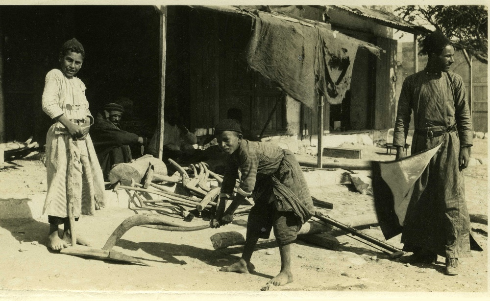

מַחֲרֵשָׁה/מַחֲרֶשֶׁת maḥarēšāh/maḥarèšet – plough, hoe (?)
Semantic Fields:
Utensils Agriculture Metals
Author(s):
Paul Sanders *
First published: 2017-12-29
Last update: 2025-03-20
Citation: Paul Sanders, מַחֲרֵשָׁה/מַחֲרֶשֶׁת maḥarēšāh/maḥarèšet – plough, hoe (?),
Semantics of Ancient Hebrew Database (sahd-online.com), 2017 (update: 2025)
Introduction
Grammatical type: noun fem.
Occurrences: 3x HB (0/3/0); 0x Sir; 0x Qum; 0x Inscr. (Total: 3)
- Nebiim: 1 Sam 13:20 (2x), 21;
- Qumran: – (see B.1).
A.1 While the first occurrence of מחרשתו in 1 Sam 13:20 (מַחֲרַשְׁתּוֹ, with pataḥ as the third vowel) is a form of *מַחֲרֶשֶׁת/*מַחֲרֵשָׁה, the second occurrence (מַחֲרֵשָׁתוֹ, with ṣerē as the third vowel) is a form of *מַחֲרֵשָׁה. The Masoretic vocalisation of 1 Sam 13:20-21 suggests that the second occurrence of מחרשתו is a form of the same noun as מַחֲרֵשֹׁת in 13:21.1 TgJ supports the Masoretic vocalisation and translates the two forms with ṣerē by forms of the same noun (עוּשְׁפָּא), while it represents the single form with a pataḥ instead of the ṣerē with a form of a different noun (פְּרָשָׁא). However, most of the ancient versions treat the first occurrence of מחרשתו in 13:20 and מַחֲרֵשֹׁת in 13:21 as forms of the same noun (see Ancient Versions). The latter option becomes more attractive as soon as one notices that the series of agricultural implements in 13:20 (מַחֲרַשְׁתּוֹ, אֵתֹו, קַרְדֻּמּוֹ, מַחֲרֵשָׁתוֹ) partially corresponds to the series in 13:21 (מַחֲרֵשֹׁת, אֵתִים, [שְׁלֹשׁ קִלְּשׁוֹן?,] קַרְדֻּמִּים, דָּרְבָן). Consequently, the first occurrence of מחרשתו in 13:20 and מַחֲרֵשֹׁת in 13:21 are sometimes treated as forms of the same noun.2
A.2
Of course,
the twofold occurrence of מחרשתו
in a single series of utensils (1 Sam 13:20) has raised questions.
Since part of the utensils mentioned in 13:20 reoccur
in the same order in 13:21 (מחרשׁה/מחרשׁת,
אֵת,
קַרְדֹּם),
the latter verse was sometimes used as a basis for emending the text of 13:20.
Julius Wellhausen (1871:84) assumed that the second מחרשתו,
the fourth item of the list in 13:20, originally corresponded to הַדָּרְבָן
at the end of 13:21. He pointed to the fact that the ancient Gk. and Syr. translations
read forms of the same noun (LXX: δρέπανον, ‘sickle’; Pesh: ܡܣܣܐ, ‘ox goad’) where MT reads מַחֲרֵשָׁתוֹ (13:20) and הַדָּרְבָן (13:21). Wellhausen’s proposal to read דָּרְבָנֹו at the end of 13:20 was taken over by many others.3 Other scholars, however, assumed that the reading τὸ δρέπανον αὐτου, ‘his sickle’, goes back to Heb. חֶרְמֵשֹׁו, since
δρέπανον represents Heb. חֶרְמֵשׁ,
‘sickle’, in Deut 16:9; 23:26 (= 23:25LXX). These scholars regarded the reading מחרשתו as secondary.4
Dominique Barthélemy argued that there is insufficient reason to replace מחרשתו
by a different word on the basis of the readings of LXX and Pesh. The earliest translators seem to have experienced the same problems with the Hebrew
text as modern scholars. They translated the second occurrence of מחרשתו
differently from the first. The translators of LXX and Pesh decided to use a noun that they used also
to render הַדָּרְבָן,
the last utensil mentioned in 13:21.
Barthélemy maintained that the first and second מחרשתו
in 13:20 derive from two different nouns, *מַחֲרֶשֶׁת
and *מַחֲרֵשָׁה.
The two nouns must have had different meanings, but neither the earliest translators nor modern scholars could retrieve exactly to what kind of sharp utensils
the two terms initially referred.5
DCH shares Barthélemy’s suggestion that
the two occurrences of מחרשתו
in 13:20 refer to two different agricultural utensils and translates them as ‘plough’ and ‘goad’, respectively.6
B.1 The sectarian composition Serekh ha-Yaḥad (Community Rule, ca. 100 BCE) contains the following enigmatic phrase: כיא בסאון רשע מחרשו.7 The passage describes the characteristics of those who may not enter the community of the faithful. Although the interpretation of the phrase is disputed, it is clear that מחרשו is not an alternative form of מחרשתו.8 It has been proposed to regard מחרש as a noun meaning ‘ploughing’.9 If סאון is taken as equivalent to Aram. סיין/סוון, ‘mud’, the whole phrase can be taken as a proverbial saying: ‘For in the mud of wickedness (is) his ploughing.’10
1. Root and Comparative Material
A.1 Root: Both *מַחֲרֵשָׁה and *מַחֲרֶשֶׁת/*מַחֲרֵשָׁה are commonly assumed to derive from חרשׁ i, ‘to plough, engrave’.11 These nouns have some Semitic cognates denoting an agricultural implement, as will be shown below. The Heb. verb חרשׁ i stems from proto-Semitic ḥrṯ and has cognates in Ug., Akk., and many other Semitic languages (see below).12 It must be distinguished from חרשׁ ii, ‘to manufacture’,13 which stems from proto-Semitic ḥrš, just like Ug. ḥrš and Phoenician ḥrš, ‘craftsman, artisan’.14 Contrary to Heb. חרשׁ i, ‘to plough, engrave’, Heb. חרשׁ ii refers to the work of the craftsman or artisan. Stephen Cook (1994) supposed that *מַחֲרֵשָׁה derives from חרשׁ i, ‘to plough, engrave’, but that *מַחֲרֶשֶׁת/*מַחֲרֵשָׁה derives from חרשׁ ii, ‘to manufacture’ (see 6.1 A.4). Aaron Koller (2012:86-89) distinguished a third root, ḫrś/חרשׂ, ‘to scratch’, assuming that חרשׁ i means only ‘to plough’, not ‘to engrave’ or ‘to scratch’. He regarded the form חֲרוּשָׁה, ‘scratched’, in Jer 17:1 as a form of this verb (with ש erroneously pointed as šin instead of śin; cf. חֶרֶשׂ in Job 2:8). Koller saw *מַחֲרֵשָׁה as a derivative of חרשׁ i, ‘to plough’, but *מַחֲרֶשֶׁת/*מַחֲרֵשָׁה as deriving from חרשׂ, ‘to scratch’ (see 6.1 A.4). However, note that in the Babylonian Talmud מחרישה denotes a ‘strigil’, an instrument for scraping the skin (see A.6).
A.2 Akkadian: The Heb. verb חרשׁ i has a cognate in Akk. erēšu, which means ‘to seed by drilling seed into a furrow by means of a seeder-plow, to cultivate or plant (a field)’.15 Among the derivatives of this verb are mērešu and mēreštu, which mean ‘cultivation’ or ‘cultivated land/field’.16 Derivatives relating to a utensil are not attested.
A.3 Ugaritic: The Ug. cognate of Heb. חרשׁ I is ḥrṯ, ‘to plough’.17 The Ug. noun mḥrṯt in KTU 1.6:IV.3, 14 and KTU 6.14:3 is usually either interpreted as ‘ploughed field’, or as a nomen instrumenti denoting the ploughshare or the plough as a whole.18 The interpretation as ‘plough(share)’ is more often assumed for KTU 6.14:3 than for KTU 1.6:IV.3, 14.19
A.4 Arabic: The Arab. verb ḥaraṯa is a cognate of Heb. חרשׁ i and means ‘to plough, to cultivate’. The Arab. noun miḥrāṯ designates a plough.20 In Old South Arabian, however, mḥrṯt refers to ploughed, cultivated land.21
A.5 Ethiopic: The Eth. (Geʿez) verb ḥarasa is a cognate of Heb. חרשׁ i and means ‘to plough’. The noun māḥras is translated as ‘ploughshare’ or as ‘plough’.22
A.6 Postbiblical Hebrew and Jewish Aramaic: In the Mishnah, the Tosefta and the Talmudim, the word מַחֲרֵשָׁה is virtually always spelled with a yod as mater lectionis: מחרישה. The term occurs ca. 70 times and denotes the plough in its entirety.23 Not surprisingly, the word occurs in a context relating to ploughing (חרשׁ qal).24 The מחרישה is said to ‘shake’ (זִעֲזֵע, pilpel of זוע) clods of earth and stones.25 The implement is regarded as indispensable.26 The expression יתד של מחרישה, literally ‘the pin of the plough’, denotes the sharp metal plough-point.27 The Tosefta refers to יתדות המחרישה, ‘plough-points’, that were attached to the plough’s חרב, ‘tail-piece, handle’.28 In the Bab. Talmud, the expression מחרישה דכספא does not represent a plough, but a strigil made of כספא, ‘silver’.29 Such a strigil was used for scraping the skin; cf. the meaning ‘to engrave’ of the verb חרשׁ i. In modern Hebrew the word מחרישה means ‘plough’.
2. Formal Characteristics
A.1 *מַחֲרֶשֶׁת30/*מַחֲרֵשָׁה31 is a miqtal form with a feminine termination (BL, 490 aζ).
A.2 *מַחֲרֵשָׁה is a maqtil form with a feminine termination. Many maqtil forms denote a utensil (BL, 492 qζ, sζ; Meyer 1969:34-35).
3. Syntagmatics
A.1 In 1 Sam 13:20, מַחֲרַשְׁתּוֹ and מַחֲרֵשָׁתוֹ represent the first and fourth objects of the verb לטשׁ, ‘to forge, hammer, sharpen’. The other objects are (2) אֵתֹו and (3) קַרְדֻּמּוֹ (all marked by the accusative particle את). 1 Sam 13:21 indicates that the price for מַחֲרֵשֹׁת as well as some other agricultural utensils was a → פים. Apparently, the price was paid for either producing or repairing them (see 6.1).
4. Ancient Versions
In the following survey of ancient translations, ‘201’ represents the first occurrence of מחרשתו (MT: מַחֲרַשְׁתּוֹ) in 1 Sam 13:20, while ‘202’ represents the second occurrence (MT: מַחֲרֵשָׁתוֹ). ‘21’ represents the word מַחֲרֵשֹׁת in 13:21.
a. Septuagint (LXX) and other Greek versions (αʹ, σʹ, θʹ):
- ἄροτρον, ‘plough’:32 201: αʹθʹ 33, 21αʹ 34;
- δίκελλα, ‘two-pronged fork’:35 202: σʹ 36;
- δρέπανον, ‘sickle’:37 202: LXX;
- θερίζειν, ‘to reap,38 harvest’:39 21LXX;
- θεριστήριον, ‘reaping-hook’:40 201 (LXXAnt 41);
- θέριστρον, ‘reaping-hook’:42 201 (most mss of LXX);
- ὕνις, ‘ploughshare’:43 201: σʹ 44.
b. Peshitta (Pesh):
c. Targum (TgJ):
- עוּשְׁפָּא, ‘adze, carpenter’s axe’, etc., used for chipping:47 202, 21;
- פְּרָשָׁא, ‘goad’, possibly also ‘ploughshare’:48 201.
d. Vulgate (Vg):
A.1 As the surveys show, the two occurrences of מחרשתו in 1 Sam 13:20 MT have two different counterparts in all the ancient translations. α´, Pesh and Vg treat the first occurrence of מחרשתו (201) as a form of the same noun as מחרשת (21) and translate the second form (202) differently. In LXX, the words representing מחרשתו (201) and מחרשת (21) are derivatives from the same root. On the other hand, the translation of TgJ suggests that the second occurrence of מחרשתו (202) is a form of the same noun as מחרשת (21). This corresponds with the Masoretic vocalisation.
A.2 TgJ translates each of the implements mentioned in 1 Sam 13:20-21 consistently: *מַחֲרֶשֶׁת/*מַחֲרֵשָׁה is translated by פְּרָשָׁא (1x); אֵת is translated by סִכַּת פַּדְנָא (2x); קַרְדֹּם is translated by כּוּלְבָה (2x); *מַחֲרֵשָׁה is translated by עוּשְׁפָּא (2x); דָּרְבָן is translated by זַקְתָּא. The fact that Heb. אֵת was rendered as סִכַּת פַּדְנָא, ‘plough-point’ (→ אֵת), seems to suggest that *מַחֲרֶשֶׁת/*מַחֲרֵשָׁה was not interpreted as such. Therefore, it may be best to translate פְּרָשָׁא as ‘goad’.
A.3 Most of the ancient translations assume that the first occurrence of מחרשתו in 1 Sam 13:20 represents an implement used for ploughing (α´, σ´, θ´, Vg, possibly TgJ). LXX and Pesh, however, interpret the word as an implement used for harvesting. In the case of LXX there is reason to believe that the translators of 1 Samuel misinterpreted the verb חרשׁ as relating to harvesting instead of ploughing.51 In 1 Samuel, the only phrase in which the verb חרשׁ i has the meaning ‘to plough’ occurs in 8:12: וְלַחֲרֹשׁ חֲרִישׁוֹ וְלִקְצֹר קְצִירוֹ (MT), literally: ‘to plough the ploughing and to harvest the harvest’. Most mss of LXX render the phrase as καὶ θερίζειν θερισμὸν αὐτοῦ καὶ τρυγᾶν τρυγητὸν αὐτου. Both θερίζειν θερισμὸν and τρυγᾶν τρυγητὸν can be translated as ‘to reap the harvest’, not as ‘to undertake the ploughing’.52
A.4 There is insufficient reason to suppose that the Gk. translation of 1 Sam 8:12 goes back to a Heb. text that differs from MT.53 The translation of the first occurrence of מחרשת/מחרשה in 13:20 by θέριστρον, ‘reaping-hook’, and the rendering of מחרשת in 13:21 by θερίζειν, ‘to harvest’, seem to be due to the same confusion regarding the meaning of חרשׁ and its derivatives. In LXXAnt καὶ θερίζειν θερισμὸν αὐτοῦ καὶ τρυγᾶν τρυγητὸν αὐτου is preceded by καὶ ἀροτριᾶν τὴν ἀροτρίασιν αὐτοῦ ‘and to undertake the ploughing’.54 Apparently, the additional phrase was inserted to assimilate the LXX to the Heb. text.55
A.5 In 1 Sam 8:12, Pesh remains close to the Masoretic reading ולחרש חרישו ולקצר קצירו (MT).56 In the case of 1 Sam 13:20-21, however, the reading of Pesh (ܡܓܠܐ, ‘sickle’) seems to have been influenced by the Gk. translation of the first מחרשת/מחרשה (13:20) by θέριστρον/θεριστήριον, ‘reaping-hook’.
5. Lexical/Semantic Fields
A.1 The noun *מַחֲרֵשָׁה and often also the noun *מַחֲרֶשֶׁת/*מַחֲרֵשָׁה are regarded as derivatives of the verb חרשׁ i, ‘to plough, engrave’. In the Hebrew Bible, the verb is used ten times for ploughing in a literal sense57 and four or five times for ploughing in a figurative sense.58 After a → עֹל, ‘yoke’, was fasted over the necks of two animals and attached to the plough, the animals pulled (משׁך qal, Deut 21:3) the plough.59
A.2 The nouns *מַחֲרֵשָׁה and *מַחֲרֶשֶׁת/*מַחֲרֵשָׁה occur only in two lists of sharp utensils (1 Sam 13:20-21). The other items in the lists are → אֵת, → קַרְדֹּם, possibly שְׁלֹשׁ קִלְּשׁוֹן (→ קִלְּשׁוֹן), and → דָּרְבָן.
A.3 Koller (2012:255) assumes that the *מַחֲרֶשֶׁת/*מַחֲרֵשָׁה was very similar to the → מַעְדֵּר and that the different words may even designate the same tool.
6. Exegesis
6.1 Textual Evidence
A.1 In view of the meaning of חרשׁ i,
‘to plough, engrave’, it is likely that
one of the occurrences of
מחרשׁה/מחרשׁת
in the list of utensils in 1 Sam 13:20 denotes an implement used for ploughing.
Most dictionaries interpret either *מַחֲרֵשָׁה
or *מַחֲרֶשֶׁת/*מַחֲרֵשָׁה as ‘ploughshare’.60
In the Mishnah, Tosefta and Talmudim, the noun מַחֲרֵשָׁה designates the entire plough, while the cognates in Arab. and Eth. (and possibly in Ug.) also denote a plough (see
1 A.3).
Most of the ancient translations assume that the first item in the list of 13:20
represents a plough (α´, θ´),
or its cutting part ( σ´, Vg, possibly TgJ). Since the plough is one of the most important agricultural utensils, it is indeed not unlikely that it is represented by the first item in the list.61
In view of the evidence from the Mishnah, Tosefta and Talmudim,
it is attractive to revocalise the first occurrence in 13:20 as מַחֲרֵשָׁתוֹ
(with ṣerē) and to maintain the vocalisation of the parallel item מַחֲרֵשֹׁת
in 13:21 (see Introduction A.1).
A.2
Ploughs were largely made of wood, as is shown by the burning of
כְּלִי הַבָּקָר,
‘equipment of the oxen’, which had just been used for ploughing a field
(1 Kgs 19:19-21),
and the use of
כְּלִי הַבָּקָר,
‘equipment of the oxen’, for its wood
(עֵצִים;
2 Sam 24:22).
However, 1 Sam 13:19-22 demonstrates that ploughs also comprised a sharp element made of metal, apparently the
so-called ‘plough-point’. The latter passage records that in the time of Saul and Jonathan the Israelites
were subject to rigid constraints.
The Philistines maintained a monopoly that enabled them to dominate the Israelites and
to prevent them from producing their own weapons.
According to many scholars, the monopoly
concerned the production and/or repair of iron implements.62
However, the MT does not say explicitly that the implements involved were made of iron.
It reveals only that among the Israelites there was no חָרָשׁ,
‘craftsman’ (13:19),
who produced
(לטשׁ; 13:20)
utensils for them.63
Only the renderings of חָרָשׁ
in LXX (τέκτων σιδήρου) and Vg (faber ferrarius)
specify that the craftsmen concerned were iron smiths.64 Actually, archaeological evidence from consecutive centuries
demonstrates that in ancient Israel implements of bronze and implements of iron were used in the same contexts.
Bronze plough-points and iron plough-points were also excavated in the same excavation layers (see 6.3).
The suggestion of LXX and Vg
that the Philistines maintained an iron monopoly is
an attractive option, but the MT may imply that the Philistines forbade all metallurgical activities among the Israelites.65
The structure of the ancient Israelite ploughs is not described in the HB or other contemporaneous
sources. However, a reconstruction is possible on the basis of contemporaneous
illustrations from Mesopotamia and Egypt and archaeological finds from
Israel/Palestine (see 6.2). Further, some terminological information can be found in the
Mishnah, the Tosefta and the Talmudim, especially in mKelim 21:2.66
In the latter passage, the word מַחֲרֵשָׁה does not occur, but
the following terms are used to denote elements of the plough:
עֹל (‘yoke’),
קַטְרֵב (‘cross-bar?’),
עַיִן (‘collar-piece?’),
עֲבֹות (‘thick ropes?’),
חֶרֶב (‘tail-piece’ or ‘handle’),
בֹּרֶךְ (‘knee-shaped beam’),
יָצוּל (‘handle’ or ‘cross-piece’),
עַיִן שֶׁל מַתֶּכֶת (‘metal ring’),
לְחָיַיִן (‘guides’),
עֲרָיִין (‘plough-flanks’ or ‘mouldboards’).
Unfortunately, it remains unclear to which elements of the plough some of these Heb. terms refer.67 Also, it is dubious whether the ancient Israelite plough consisted of the same elements as the plough type to which this section of the Mishnah refers.
A.3 Philip King and Lawrence Stager give the following description of the way in which ploughing was performed in ancient Israel (King & Stager 2001:92; cf. 88):
Plowing prepared the ground for sowing in late October-November, after the first rain (yôreh) had softened the earth. A field was plowed twice, once to loosen the crusty soil before the seed was broadcast, and then at right angles to the first plowing to cover the seed. The metal-tipped scratch plow did not turn over the soil the way a moldboard plow does but simply scratched a shallow furrow by breaking and loosening the soil.
Like the ancient Egyptian and Mesopotamian ploughs, ancient Israelite ploughs were usually pulled by a pair (צֶמֶד) of oxen (בָּקָר: 1 Sam 11:7; 1 Kgs 19:21; Amos 6:12; Job 1:3, 14; 42:12). A female cow could also be use for ploughing, as is shown by the remark that in specific situations a cow that had not yet carried a yoke or pulled a plough was used (פָּרָה, ‘cow’: Num 19:2; 1 Sam 6:7; עֶגְלָה, ‘heifer’: Deut 21:3; cf. Judg 14:18; Hos 10:11). Donkeys could also be used to work the land (cf. Isa 30:24: עֲיָרִים, ‘male donkeys’), but it was forbidden to let an ox (שׁוֹר) and a donkey (חֲמֹור) pull a plough together (Deut 22:10).68
A.4 If the second occurrence of מחרשׁתו in 1 Sam 13:20 is left unemended,69 only one of the two occurrences may be assumed to designate a plough(-point).70 A classical translation of the second occurrence is ‘mattock’.71 Eduard König interpreted *מַחֲרֶשֶׁת as ‘wahrscheinlich der Schollenzerteiler, mit dem bei den Alten hinter dem Pfluge die grossen Erdklumpen zerteilt wurden’ (HAWAT, 219). Dominique Barthélemy decided to leave it untranslated (CTAT 1:181). Stephen Cook supposed that the first of the near-homonyms derives from חרשׁ i, ‘to plough, engrave’, while the second derives from חרשׁ ii, ‘to manufacture’ (see 1 A.1). According to Cook, the first noun clearly refers to a plough, while the second noun, which can be translated as ‘crafted/forged tool’, can best be interpreted as an equivalent of the parallel term דָּרְבָן, probably ‘goad’ (end of 13:21).72 However, the interpretation of the final item in the list of 13:20 remains uncertain, as Cook admits.73 Actually, the interpretation as a ‘goad’ is not attractive, since the presence of a metal point at the end of goads was not essential.74 This noun can also be seen as a derivative of חרשׁ i and may refer to a different tool used for ‘engraving’ the soil, wood, etc. However, Aaron Koller (2012:86-89) distinguished a third root, ḫrś/חרשׂ, ‘to scratch’, assuming that חרשׁ i means only ‘to plough’, not ‘to engrave’ or ‘to scratch’ (see 1 A.1). He interpreted *מַחֲרֶשֶׁת/*מַחֲרֵשָׁה as deriving from חרשׂ, ‘to scratch’. With reference to Yemeni Arab. mḫrš, ‘harrow’, and ḫrš, ‘to till by hand’, he suggested that the noun *מַחֲרֶשֶׁת/*מַחֲרֵשָׁה designates a hoe or a harrow. The noun may indeed represent a tool for weeding or tilling the soil by hand (cf. sarculum in Vg).75
B.1 Only rarely is none of the occurrences of מחרשׁה/מחרשׁת in 1 Sam 13:20-21 identified with a plough or an element of it.76
6.2 Pictorial Material
A.1 The lack of ancient pictures of ploughs from the Levant (Syria-Palestine) is compensated by images from Mesopotamia and Egypt. The ploughs are commonly depicted as drawn by two oxen.77 The images show two types of plough:
- Simple ploughs without a seed drill drawn by a pair of animals and guided by a single man, who may hold a stick or goad or whip to drive the animals.78 In such cases, the seeding was done after the first ploughing. The distinction between the two procedures is illustrated by images displaying a sower who works at some distance from the ploughman and his plough.79
- Ploughs provided with a seed drill, drawn by a pair of animals and guided by a single man, who is assisted by another man, who takes care of the seeding process.80
The depicted ploughing scenes are Mesopotamian or Egyptian, but there are good reasons to believe that the ploughs of the Israelites were quite similar to the ploughs on the images. In ancient Israel, ploughs were not yet provided with a seed drill and the sowing took place after the first ploughing of the ground.81 Therefore, the Israelite ploughs were probably of the same type as the simpler ploughs of the Mesopotamians and Egyptians.

Figure 1: Egyptian ploughing scene, burial chamber of Sennedjem, 13th century BCE
The ploughs of the Mesopotamian and Egyptian depictions have the following features in common:
- A wooden beam connects the plough with a yoke that was fastened over the necks of the pulling animals.
- The essential part of the plough is a wooden beam protruding forward in the direction of the animals, at the bottom of the plough. The beam may be curved and is provided with a sharp metal point that makes furrows in the ground.
- The plough includes a wooden handle or a pair of handles, serving to steer the plough. Usually, the steering handle is part of the same beam as the wood to which the plough-point was affixed.
A.2 Photographs from the early twentieth century show traditional ploughs with construction styles that hardly differed from the ancient Near Eastern structures.82

Figure 2:
Plough shop in Beersheba, October 16, 1924
Universiteitsbibliotheek Utrecht, Collectie Vriezen
Recent film recordings show a way of ploughing that gives an impression of the ways in which ploughing was performed in the ancient Near East. Several informative recordings from, for example, Egypt and India have been uploaded on YouTube:
A.3 *מַחֲרֶשֶׁת/*מַחֲרֵשָׁה may denote a hoe or harrow (see 6.1 A.4). For ancient pictures of hoes from the Levant (Syria-Palestine), see → מַעְדֵּר.
6.3 Archaeology
A.1 The wood of ancient Near Eastern ploughs has usually decomposed completely, but many metal plough-points have survived. The archaeological evidence from Israel/Palestine shows that in the twelfth century bce bronze plough-points began to be replaced by iron plough-points, although the use of bronze plough-points appears to have continued for several centuries.83 Oded Borowski offers an excellent description of the excavated plough-points:
The plow-point was an elongated tool, 20-30 cm long, with a pointed tip for soil penetration. The other end was shaped like a pipe, ca. 8-10 cm wide. A wooden shaft, which was part of the plow-handle, was inserted into this end.84
Koller (2012:89-90) shows that the archaeological evidence corresponds with the idea expressed in the Mishnah and Tosefta that the מַחֲרֵשָׁה scratches the soil to a depth of not more than ‘three handbreaths’ (שְׁלשָׁה טְפָחִין). He defines the מַחֲרֵשָׁה as ‘a piece of metal hammered into the shape of a cone and attached at the end of the wooden plow, which cuts through the soil to a depth of about 15-30 cm.’ (2012:253). Nowadays, the designation ‘ploughshare’ is commonly used for the curved blade of the so-called mouldboard plough, which turns over the soil. It is confusing to denote the cutting element of the ancient Israelite scratch ploughs as ‘ploughshare’, since its form and function where quite different from the ploughshares of mouldboard ploughs. Therefore, Borowski’s designation as ‘plough-points’ is preferable.85
A.2 *מַחֲרֶשֶׁת/*מַחֲרֵשָׁה may denote a hoe or harrow (see 6.1 A.4). For remains of hoes from the Levant (Syria-Palestine), see → מַעְדֵּר.
7. Conclusion
A.1 In Biblical Hebrew, the noun *מַחֲרֵשָׁה (< חרשׁ i, ‘to plough’) probably denotes the ancient Israelite ‘plough’. In the Mishnah, Tosefta and Talmudim, the word מַחֲרֵשָׁה denotes the plough as a whole. It is possible that one of the occurrences of מחרשׁה/מחרשׁת in 1 Sam 13:20 also designates the entire plough, but it cannot be excluded that at this earlier stage it represented only the metal plough-point. If in 1 Sam 13:20 the first occurrence of מחרשׁתו represents a plough, the form must probably be revocalised as מַחֲרֵשָׁתוֹ. The vocalisation of the parallel term מַחֲרֵשֹׁת in 13:21 can be retained and this form can be translated as ‘ploughs’ or ‘plough-points’.
A.2 The proposals to emend the second occurrence of מחרשׁתו in 1 Sam 13:20 are debatable. The noun *מַחֲרֶשֶׁת/*מַחֲרֵשָׁה may denote a hoe or harrow (see 6.1 A.4), but it is not possible to identify the designated tool with certainty.
Bibliography
For the abbreviations see the List of Abbreviations.
Chanokh Albeck (ed.), שׁשׁה סדרי משׁנה, vol. 6: סדר טהרות, Jerusalem: Mosad Bialiq; Tel Aviv: Devir.
Wolfgang Bunte, Die Mischna: Text, Übersetzung und ausführliche Erklärung, vol. VI/1: Kelim, Berlin: de Gruyter.
Oded Borowski, Agriculture in Ancient Israel, Winona Lake, IN: Eisenbrauns.
Millar Burrows, The Dead Sea Scrolls of St. Mark’s Monastery, vol. II, fasc. 2: Plates and Transcription of the Manual of Discipline, New Haven: ASOR.
James H. Charlesworth, The Dead Sea Scrolls: Hebrew, Aramaic and Greek Texts with English Translations, vol. 1: Rule of the Community and Related Documents, Tübingen: J.C.B. Mohr; Louisville: Westminster John Knox.
Stephen L. Cook, ‘The Text and Philology of 1 Samuel XIII 20-1’, VT 44:250-54.
Herbert Danby, The Mishnah Translated from the Hebrew with Introduction and Brief Explanatory Notes, Oxford: Oxford University.
Walter Dietrich, 1 Samuel 13-26 (BKAT, 8/2), Neukirchen-Vluyn: Neukirchener.
Manfred Dietrich, Oswald Loretz, ‘ “Weihen” (ʿly Š) von pgr, Ochsen und Gegenständen in KTU 6.13, 6:14 und 6.62’, UF 37:227-39.
Natalio Fernández Marcos, José Ramón Busto Saiz, El texto antioqueno de la Biblia griega, I: 1-2 Samuel (TECC 50), Madrid: Instituto de Filología, C.S.I.C.
Jan P. Fokkelman, Narrative Art and Poetry in the Books of Samuel, vol. 2: The Crossing Fates (1 Sam. 13-31 & 2 Sam. 1), Assen: Van Gorcum.
Volkmar Fritz, Kinneret: Ergebnisse der Ausgrabungen auf dem Tell el-ʿOrēme am See Gennesaret 1982-1985 (ADPV 15), Wiesbaden: Harrassowitz.
Bernard Grillet, Michel Lestienne, La Bible d’Alexandrie, 9.1: Premier livre des Régnes, Paris: Cerf.
Vinzenz Hamp, Heinz-Josef Fabry, Helmer Ringgren, ‘חָרַשׁ ḥāraš, הֲרָשִׁם ,חָרָשׁ’, TDOT v:221-24.
Philippe Hugo, ‘1-2 Kingdoms (1-2 Samuel)’, in: James K. Aitken (ed.), The T&T Clark Companion to the Septuagint, London: Bloomsbury T&T Clark, 127-46.
Philippe Hugo, ‘Basileion I und II / Das erste und zweite Buch der Königtümer / Das erste und zweite Buch Samuel’, in: Siegfried Kreuzer (ed.), Einleitung in die Septuaginta (LXX.H, 1), Gütersloh: Gütersloher, 207-31.
Philip J. King, Lawrence E. Stager, Life in Biblical Israel, Louisville & London: Westminster John Knox.
Ralph W. Klein, 1 Samuel (WBC, 10), Waco, TX: Word.
Aaron J. Koller, The Semantic Field of Cutting Tools in Biblical Hebrew: The Interface of Philological, Semantic, and Archaeological Evidence (CBQMS, 49), Washington: The Catholic Biblical Association of America.
Samuel Krauss, Talmudische Archäologie, vol. II, Leipzig: Fock.
W.G. Lambert, ‘Near Eastern Seals in the Gulbenkian Museum of Oriental Art, University of Durham’, Iraq 41:1-45.
Samuel E. Loewenstamm, ‘The Hebrew root חרשׁ in the light of the Ugarit Texts’, JJS 10:63-65.
Oswald Loretz, ‘Ugaritisch-hebräisch “Pflugschar” (mḥrṯt /*mḥršh)’, SEL 10:71-78.
P. Kyle McCarter, 1 Samuel (AB), Garden City NY: Doubleday.
Paula M. McNutt, The Forging of Israel: Iron Technology, Symbolism, and Tradition in Ancient Society (JSOTSup, 108), Sheffield: Almond.
Rudolf Meyer, Hebräische Grammatik, II: Formenlehre, Flexionstabellen, 3. Auflage, Berlin: de Gruyter.
Paul T. Nicholson, Ian Shaw (eds), Ancient Egyptian Materials and Technology, Cambridge: Cambridge University.
Ursula Seidl, ‘Pflug, B: Archäologisch’, in RLA 10:514-16.
Hans Joachim Stoebe, Das erste Buch Samuelis (KAT, 8/1), Gütersloh: Mohn.
Bernard A. Taylor, The Lucianic Manuscripts of 1 Reigns, vol. 1: Majority Text (HSM, 50), Atlanta GA: Scholars.
Michaël N. van der Meer, ‘Trendy Translations in the Septuagint of Isaiah: A Study of the Vocabulary of the Greek Isaiah 3, 18-23 in the Light of Contemporary Sources’, in: M. Karrer, W. Kraus (eds), Die Septuaginta – Texte, Kontexte, Lebenswelten: Internationale Fachtagung veranstaltet von Septuaginta Deutsch (LXX.D), Wuppertal 20.-23. Juli 2006 (WUNT, 219), Tübingen: Mohr-Siebeck, 581-96.
Eveline L. van der Steen, ‘Iron’, in NIDB 3:67-69.
Eveline L. van der Steen, ‘Metallurgy’, in NIDB 4:68-70.
Hermann Vogelstein, Die Landwirtschaft in Palästina zur Zeit der Mišnah, Teil I: Der Getreidebau, Breslau: Graß, Barth & Comp. (W. Friedrich).
Julius Wellhausen, Der Text der Bücher Samuelis untersucht, Göttingen: Vandenhoeck & Ruprecht.
Frans A.M. Wiggermann, ‘Agriculture in the Northern Balikh Valley: The Case of Middle Assyrian Tell Sabi Abyad’, in R.M. Jas (ed.), Rainfall and Agriculture in Northern Mesopotamia, Proceedings of the Third MOS Symposium (Leiden 1999), Istanbul: Nederlands Historisch-archeologisch Instituut, 171-231.
Raimund Wirth, ‘Die griechische Übersetzung der Samuelbücher: Die Samuel-Septuaginta als Herausforderung für die alttestamentliche Textforschung’, Journal of Biblical Textual Criticism 22:1-13.
G. Ernest Wright, ‘Archaeological News and Views’, BA 6/2:32-36.
Jonathan Yogev, ‘A Bull with a Plow: Notes on RS 6.028 (KTU 6.14)’, in Shamir Yona, Haim Dihi, Asnat Damri, Christian Stadel (eds), ‘I, Daniel, Understood from the Scrolls’ (Daniel 9:2): Studies in Honor of Professor Daniel Sivan (Publications of the Institute for the Study of the Bible and Ancient History, 11), Rehovot: Megillat Sefer Press, i-xii.
Notes
Many thanks are due to Jan A. Wagenaar (formerly Utrecht University) for allowing me to make use of his unpublished contributions to the KLY project. Thanks are also due to Benjamin Bogerd (Protestant Theological University, Utrecht).
Many thanks are due to Jan A. Wagenaar (formerly Utrecht University) for allowing me to make use of his unpublished contributions to the KLY project. Thanks are also due to Benjamin Bogerd (Protestant Theological University, Utrecht).
-
If מחרשֹׁת in 13:21 were a plural form of *מַחֲרֶשֶׁת/*מַחֲרֵשָׁה, the expected vocalisation in 13:21 would be מַחֲרָשֹׁת (with qameṣ). Cf. מַעֲרָכוֹת in Lev 24:6, מַאֲכָלוֹת in Prov 30:14, and the similar plural forms of other nouns mentioned in BL, 490 aζ. ↩
-
DCH v: 229-30. See also the discussion in 4. A.1-2 and 6.1. ↩
-
See BHK1, BDB, 361, and the literature mentioned in Barthélemy, CTAT 1:180. ↩
-
See BHK2/3, KBL, 515; Ges18, 661, and the literature mentioned in Barthélemy, CTAT 1:180-81. See also the critical assessment of this emendation by Koller (2012:84-85). In other contexts, δρέπανον represents Heb. מַזְמֵרָה (Isa 2:4; 18:5; Mic 4:3; Joel 4:10) or Heb. מַגָּל (Jer 50:16 = 27:16LXX; Joel 4:13). Remarkably, no scholars seem to have suggested reading מזמרתו or מגלו instead of מחרשתו at the end of 1 Sam 13:20. Stoebe (1973:254) proposed reading חֲרִיצֹו instead of מחרשתו (cf. 2 Sam 12:31). ↩
-
Barthélemy, CTAT 1:181. Similarly: Cook (1994), who retained the MT as the lectio difficilior. ↩
-
DCH v:229-30. ↩
-
The reading is found in 1Q28/1QS iii:2 (Burrows 1951: Plate III; Charlesworth 1994:12) and 4Q257/4QpapSc iii:3-4 (DJD XXVI, 73, damaged). ↩
-
For unknown reasons, the noun מחרש in the Community Rule is mentioned under the lemma *מַחֲרֵשָׁה/*מַחֲרֶשֶׁת in Ges18, 661. ↩
-
DJD XXVI, 76. ↩
-
See Charlesworth 1994:13 (with different translations in n. 44); DJD XXVI, 76-77. See also the lemma *מַחֲרָשׁ in DCH v:229. ↩
-
BDB, 361; KBL, 515; DCH v:229; HALOT, 572. ↩
-
For cognates of חרשׁ i in Old Canaanite, Aramaic, etc., see DNWSI, 407, 408; Koller 2012:87. ↩
-
Loewenstamm 1959; Hamp et al. 1986:222-23; For חרשׁ ii, see Ges18, 402 (חֹרֵשׁ נְחֹשֶׁת וּבַרְזֶל in Gen 4:22 and חֹרֵשׁ נְחֹשֶׁת in 1 Kgs 7:14); cf. the noun חָרָשׁ, ‘craftsman’, ‘artisan’. ↩
-
For Ug. ḥrš, ‘craftsman, artisan’, see WUS, 108; UT, 399 (# 903); DULAT 1, 370-71; DULAT 3, 366; KWU, 47. For Phoenician ḥrš, ‘craftsman’, ‘artisan’, see DNWSI, 408. ↩
-
CAD E, 285-89. Similarly: AHw i:238-39. ↩
-
CAD M II, 23-25. Similarly: AHw ii:645-46. ↩
-
WUS, 108-09; UT, 399 (# 905); DULAT 1, 371-72; DULAT 3, 367; KWU, 47. ↩
-
See WUS, 108; DLU, 268; UG, 267; DULAT 1, 537-38; DULAT 3, 531. After a discussion of the various translations, the interpretation as ‘plough(share)’ is rejected by Dietrich and Loretz (2005, 228-30; cf. TUAT.NF 6: 86), although Loretz previously interpreted all the three occurrences of mḥrṯt as ‘ploughshare’ (Loretz 1993). ↩
-
Cf. Yogev 2025. KWU, 71, prefers the translation ‘Pflug’ (plough) for the occurrence in KTU 6.14:3, and suggests that mḥrṯt in KTU 1.6:IV.3, 14 is a different noun with the meaning ‘Ackerland’ (cultivated land). ↩
-
Lane, 541-42; Wehr, 166. ↩
-
SD, 71; DOSA, 192. ↩
-
CDG, 243. ↩
-
In addition to the occurrences mentioned in the following notes, the word מחרישה occurs in mBava Batra 2:1, 12, 13; tShabbat 6:8; tBava Qamma 2:6; tBava Metziʿa 9:18; tBava Batra 1:2, 14; tKelim Bava Metziʿa 5:7; t.ʾOhalot 15:13; bTaʿanit 25b; bBava Qamma 30a; bBava Batra 17a, 18a, 19a, 26a, 27b, 82b; yPeʾah 2, 17a; 6, 19c; yKilʾayim 7, 30d; yNazir 7, 55d; yBava Qamma 3, 3c; yBava Metziʿa 9, 12b (together with קורדום; cf. → קַרְדֹּם in 1 Sam 13:20-21); yBava Batra 2, 13ab; 7, 15c. In mSheviʿit 5:6 and bʿAvodah Zarah 15b, reference is made to מַחֲרֵישָׁה וְכָל כֵּלֶיהָ, ‘the plough and all its implements’. ↩
-
mʾOhalot 17:1-3. ↩
-
mSheviʿit 3:7; tSheviʿit 3:4; ySheviʿit 3, 34bd; mʿOrlah 1:3; yʿOrlah 1, 60c. ↩
-
According to mBava Metziʿa 9:13, a creditor who wants to take a pledge from a debtor may take a כַּר, ‘pillow’, by day and must give it back by night (cf. Deut 24:12-13) and may take a מַחֲרֵשָׁה by night and must return it by day. Apparently, the כַּר and the מַחֲרֵשָׁה were seen as essential. The rule is quoted in bBava Metziʿa 113a, yBava Metziʿa 9, 12a, and bTemurah 6a. See also Sifre Devarim 277. ↩
-
mShabbat 17:4 quotes Rabbi Yose as saying that on the Shabbat ‘all utensils may be moved except for the large saw and the plough-point’ (כל הכלים נטלין חוץ מן המסר הגדול ויתד של מחרשה). The saying occurs also in tShabbat 14:1; bShabbat 123b, 157a; bʿEruvin 35a; yShabbat 17, 16a. Further, the expression יתד של מחרישה occurs also in bʿEruvin 86a. ↩
-
tKelim Bava Batra 1:7, which refers also to the עיין, ‘eye’, as an element that could be detached from the plough. In mKelim 21:2 the terms חרב and עיין are also used for parts of the plough (see 6.1 A.2). ↩
-
Jastrow, DTT, 764, WTM iii:82, with reference to bKetubbot 68a, bBava Metziʿa 113b. According to bBava Metziʿa 113ab, Raba son of Rabbah interpreted the word מחרישה in mBava Metziʿa 9:13 (see n. 26) as ‘strigil’, not as ‘plough’. ↩
-
This form is proposed in BDB, 361; KBL, 515; HALOT, 572; Ges18, 661. ↩
-
This form is proposed in DCH v:229. ↩
-
Adrados, DGE, 521; LEH1, 62; GELS, 92. ↩
-
Field I:507. ↩
-
Field I:508. ↩
-
LSJ, 430; Montanari, BDAG, 530. Adrados, DGE, 1094:1) ‘azada de dos puntas, laya’, 2) ‘piqueta, azuela para demolición’. ↩
-
Field I:507-08. ↩
-
Adrados, DGE, 1167; LEH1, 121; GELS, 178. ↩
-
LEH1, 204. ↩
-
GELS, 328. ↩
-
LSJ, 793; GELS, 328. ↩
-
Fernández Marcos & Busto Saiz 1989:36; Taylor 1992:42. ↩
-
GELS, 328, with reference to Van der Meer 2008:592-96. In all the other verses (Gen 24:65; 38:14, 19; Isa 3:23; Song 5:7), θέριστρον is translated as ‘light summer garment’ or ‘veil’. ↩
-
LSJ, 1849; Montanari, BDAG, 2184. ↩
-
Field I:507-08. ↩
-
Payne Smith, CSD, 250; Sokoloff, SLB, 709. ↩
-
Payne Smith, CSD, 285; Sokoloff, SLB, 793. SLB gives as a second translation ‘part of plow’. ↩
-
Jastrow, DTT, 1059. WTM iii:711 (Heb. עֹושֶׁף): ‘der spitze Theil eines Instrumentes, welcher zum Bohren und Pflügen diente, der andere scharfe Theil dieses Instrumentes diente zum Holzspalten’. According to mKelim 13:3, the → קַרְדֹּם has an עֹושֶׁף ‘paring/chipping edge’ and a בֵּית בִּקּוּעַ ‘splitting/chopping edge’. ↩
-
Jastrow, DTT, 1243, distinguishes פְּרָשָׁא I, ‘[driving] goad’ (TgJ Judg 3:31), from פְּרָשָׁא II, ‘[breaker, crusher,] ploughshare’ (1 Sam 13:20). WTM iv:145, and Dalman, ANHT, 354, suggest that פְּרָשָׁא means ‘ox goad’ in Judg 3:31 as well as 1 Sam 13:20. See further the discussion in section 4 A.2. ↩
-
OLD, 1691. Lewis & Short, LD, 1631, describe sarculum as ‘an implement for loosening the soil, weeding, etc., a light hoe’. ↩
-
Lewis & Short, LD, 2014; OLD, 2103. ↩
-
For the distinctive character of the transmitted LXX text of 1 Samuel, see Hugo 2015:129-32; Hugo 2016:222-23. ↩
-
GELS, 328, 689. For the precise meaning of θερίζειν θερισμὸν and τρυγᾶν τρυγητὸν, see also Grillet & Lestienne 1997:196-97. ↩
-
Grillet and Lestienne (1997:197) suggest that the Heb. source used by the Gk. translators read ולקצר קצירו ולבצר בצירו instead of ולחרש חרישו ולקצר קצירו (MT). See also DJD XVII, 59. However, in addition to the deviating Gk. rendering of מחרשת/מחרשה in 1 Sam 13:20-21, reference must be made to a fragment of 4Q51/4QSama showing the letters [ולחר]ש חר̊[ישו] at the expected position (DJD XVII, 58). The Gk. translation seems to be due to confusion about the meaning of Heb. חרשׁ; see Wirth 2017:5. ↩
-
Fernández Marcos & Busto Saiz 1989:22; Taylor 1992:25. ↩
-
McCarter argues that the Antiochene text of LXX reflects the initial Heb. reading (reconstructed as לחרש חרישו ולקצר קצירו ולבצר בצירו). This leads to the artificial assumption that the shorter readings of MT and the rest of LXX are ‘haplographic, each in its own way’ (McCarter 1980:155). ↩
-
Pesh reads ܘܢܕܒܪܘܢ ܕܒܪܗ ܘܢܚܨܕܘܢ ܚܨܕܗ (wndbrwn dbrh wnḥṣdwn ḥṣdh). The verb ܕܒܪ (dbr) is a common translation of Heb. חרשׁ i with the meaning ‘to plough’ (see Deut 22:10; 1 Kgs 19:19, etc.), while ܚܨܕ (ḥṣd) is a standard translation of the verb קצר (see 1 Sam 6:13; 2 Kgs 4:18; 19:29, etc.). ↩
-
Deut 22:10; 1 Sam 8:12; 1 Kgs 19:19; Isa 28:24; Jer 26:18; Amos 6:12; 9:13; Mic 3:12; Job 1:14; Prov 20:4. ↩
-
Judg 14:18, Hos 10:11, 13; Ps 129:3; Job 4:8. ↩
-
For other terms used in connection with ploughing, see Borowski 1987:48, 51-53. ↩
-
Gesenius, TPC i:530; BDB, 361; GB, 416; HAWAT, 219; KBL, 515; Zorell, 428; DCH v:229; HALOT, 572; Ges18, 661. ↩
-
Compare the rule in mBava Metziʿa 9:13 implying that a creditor may not take a מַחֲרֵשָׁה as a pledge during the day. See n. 26. ↩
-
Klein 1983:127-28; Van der Steen 2008:67; 2009:69. ↩
-
The verb לטשׁ means ‘to forge, hammer, sharpen’. 1 Sam 13:20-21 was often assumed to relate to the repair of metal implements (e.g., McCarter 1980:232; Klein 1983:128), but is likelier that the passage has their production in mind. See Stoebe 1973:254-55. ↩
-
However, see also כל מן דברזל ‘each iron implement’ in 1 Sam 13:21 TgJ. ↩
-
McNutt 1990:19, 144, 205, 238. Cf. also Dietrich 2015:50. ↩
-
In addition to mKelim 21:2, see the evidence discussed in 1 A.6. tKelim Bava Metziʿa 5:7 mentions a ב(ו)רית מחרישה, ‘hoop of the plough’. The בֹּרֶךְ הַמַּחֲרֵשָׁה, ‘knee of the plough’, is also mentioned in mʾOhalot 17:1-3 and bTaʿanit 25b. ↩
-
For the disputed translation of the terms, see WTM; Jastrow, DTT; Dalman, ANHT; Krauss 1911:172-73, 553-56; Danby 1933:636; Bunte 1972:372-75; Koller 2012:93-94. A drawing in Albeck’s edition of the Heb. text (1959:93) shows which elements of the plough were assumed to be designated by the terms חֶרֶב, בֹּרֶךְ, יָצוּל and עֲרָיִין. ↩
-
See also Borowski 1987:52. ↩
-
For emendation proposals and Barthélemy’s objections, see Introduction A.2. ↩
-
Gesenius, TPC i:530, translated one of the occurrences as vomer, ‘ploughshare’, and the other as cultrum, ‘coulter’, dens aratri, ‘plough-point’. ↩
-
KJV, ASV, NJPS. In these translations, not only the final item of the list in 13:20 (MT: מַחֲרֵשָׁתוֹ) is translated as ‘mattock’, but the first item of the list in 13:21 (MT: מַחֲרֵשֹׁת) is also translated as ‘mattocks’, undoubtedly because these forms have the ṣerē vowel in common. ↩
-
Cook 1994. In DCH, where the first occurrence of מחרשׁה/מחרשׁת in 13:20 is translated as ‘ploughshare’, the second occurrence is also interpreted as ‘goad’ because of the parallelism with דָּרְבָן (DCH v:229-30). ↩
-
Cook 1994:252, 254, n. 11. ↩
-
See Stoebe 1973:254. ↩
-
In NASB not only מחרשׁה/מחרשׁת at the end of 13:20 but also דָּרְבָן at the end of 13:21 is translated as ‘hoe’. ↩
-
Fokkelman (1986:45) identified the first occurrence of מחרשׁה/מחרשׁת in 1 Sam 13:20 with a scythe, probably due to LXX θέριστρον. Like many others (see Introduction A.2), Fokkelman replaced the second occurrence in the same verse by חֶרְמֵשׁ, ‘sickle’. ↩
-
Wiggermann (1999:189-90, 228) remarks that if one ox is depicted this must be due to artistic convention, ‘since one ox cannot pull a plough in a straight line’ (190). Differently: Borowski 1987:51; Seidl 2003-2005:514. ↩
-
Egyptian: Fig. 1 in the present article; ANEP 25, #84; 27, #91; 37, #122; BRL2, 255 (fig. 66/2); Borowski 1987:53 (fig. 5), 58 (fig. 8), 60 (fig. 10); Mesopotamian: Wiggermann 1999:228 (fig. 7a, 7b). ↩
-
Mesopotamian: Lambert 1979:22-23, regarding Plate VII fig. 63; Wiggermann 1999:228 (fig. 7c), 230 (fig. 9); Egyptian: Borowski 1987:53 (fig. 5); Nicholson & Shaw 2000:270 (fig. 11.2). ↩
-
Only Mesopotamian: ANEP 25, #86; cf. #88; Borowski 1987:55 (fig. 6; cf. 56 fig. 7); Wiggermann 1999:228 (fig. 7d); Seidl 2003-2005, 514. ↩
-
Borowski 1987:53-56. However, Borowski (47-48, 53-54) shows that also in Israel the relationship between ploughing and sowing was close, since ploughing was done for the sole purpose of sowing (cf. Isa 28:24). ↩
-
See Figure 2 and Dalman, AuS 2, plates 18-39. See also the discussion in Dalman, AuS 2, 64-115; Borowski 1987:48; King & Stager 2001:92. ↩
-
For the gradual replacing of bronze implements by iron implements in Israel/Palestine during the twelfth to tenth centuries bce, see McNutt 1990:209-11. ↩
-
Borowski 1987:51, with several drawings of plough-points (50-51, fig. 3, 4) and a survey of the sites where they were discovered (49, 51). For a similar description as well as drawings of plough-points, see BRL2, 255 (fig. 66/1). Excellent drawings of two iron plough-points excavated in Kinneret are offered in Fritz 1990:366-67 (Plate 116). For a photo of an iron plough-point and other iron implements from Tel Miqne-Ekron, see King & Stager 2001:93. ↩
-
Cf. also Wright 1943:35; Dietrich 2015:28. ↩